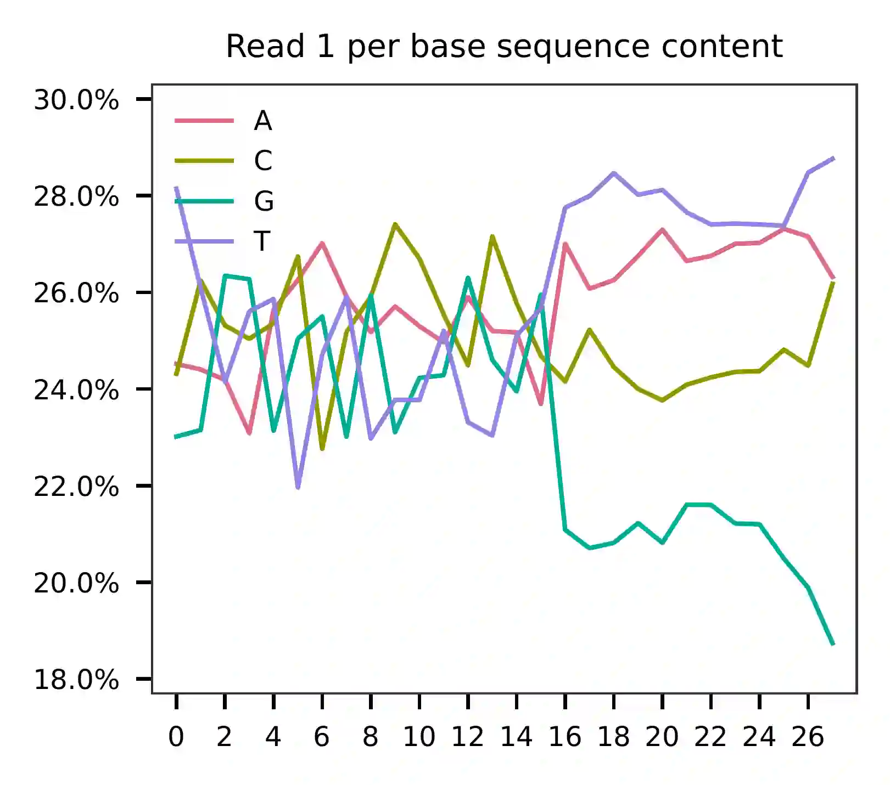
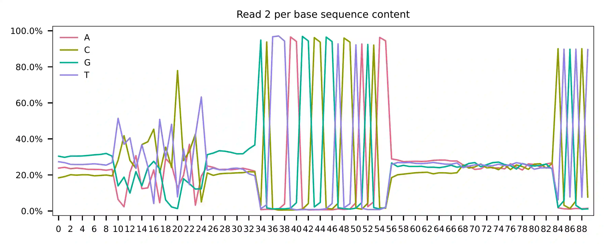
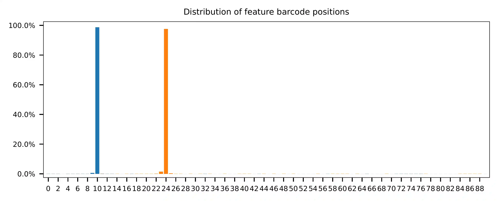

1k Human PBMCs Stained with a Panel of TotalSeq B Antibodies¶
Dataset: 1k Human PBMCs Stained with a Panel of TotalSeq B Antibodies, Dual Indexed
The detailed description of this dataset can be found here.
Preparation¶
Download fastq files.
$ wget https://cf.10xgenomics.com/samples/cell-exp/4.0.0/SC3_v3_NextGem_DI_PBMC_CSP_1K/SC3_v3_NextGem_DI_PBMC_CSP_1K_fastqs.tar
$ tar xvf SC3_v3_NextGem_DI_PBMC_CSP_1K/SC3_v3_NextGem_DI_PBMC_CSP_1K_fastqs.tar
Combine reads of different lanes.
$ cat SC3_v3_NextGem_DI_CSP-Labeled_PBMCs_1K_fastqs/SC3_v3_NextGem_DI_CSP-Labeled_PBMCs_1K_antibody_fastqs/SC3_v3_NextGem_DI_CSP-Labeled_PBMCs_1K_antibody_S1_L00?_R1_001.fastq.gz > SC3_v3_NextGem_DI_CSP-Labeled_PBMCs_1K_antibody_S1_combined_R1.fastq.gz
$ cat SC3_v3_NextGem_DI_CSP-Labeled_PBMCs_1K_fastqs/SC3_v3_NextGem_DI_CSP-Labeled_PBMCs_1K_antibody_fastqs/SC3_v3_NextGem_DI_CSP-Labeled_PBMCs_1K_antibody_S1_L00?_R2_001.fastq.gz > SC3_v3_NextGem_DI_CSP-Labeled_PBMCs_1K_antibody_S1_combined_R2.fastq.gz
Download cell barcode info. These are the cell-associated barcodes in this single cell RNA-Seq library.
$ wget https://cf.10xgenomics.com/samples/cell-exp/4.0.0/SC3_v3_NextGem_DI_PBMC_CSP_1K/SC3_v3_NextGem_DI_PBMC_CSP_1K_filtered_feature_bc_matrix.tar.gz
$ tar zxvf SC3_v3_NextGem_DI_PBMC_CSP_1K_filtered_feature_bc_matrix.tar.gz
Inspect cell barcodes.
$ gzip -dc filtered_feature_bc_matrix/barcodes.tsv.gz | head
AAACCCAGTACCAGAG-1
AAACGCTTCGGTCTGG-1
AAACGCTTCGTTGCCT-1
AAAGAACAGGAACTCG-1
AAAGGATAGGTCGAGT-1
AAAGGGCCAAGACGGT-1
AAAGGGCCATCCTCAC-1
AAAGGTATCGTGGACC-1
AAAGTCCGTCGCGTTG-1
AAAGTCCTCCTTATCA-1
Prepare feature barcodes.
$ wget https://cf.10xgenomics.com/samples/cell-exp/4.0.0/SC3_v3_NextGem_DI_PBMC_CSP_1K/SC3_v3_NextGem_DI_PBMC_CSP_1K_feature_ref.csv
Inspect feature barcode info.
$ head SC3_v3_NextGem_DI_PBMC_CSP_1K_feature_ref.csv
id,name,read,pattern,sequence,feature_type
CD3,CD3,R2,^NNNNNNNNNN(BC)NNNNNNNNN,CTCATTGTAACTCCT,Antibody Capture
CD4,CD4,R2,^NNNNNNNNNN(BC)NNNNNNNNN,TGTTCCCGCTCAACT,Antibody Capture
CD8a,CD8a,R2,^NNNNNNNNNN(BC)NNNNNNNNN,GCTGCGCTTTCCATT,Antibody Capture
CD11b,CD11b,R2,^NNNNNNNNNN(BC)NNNNNNNNN,GACAAGTGATCTGCA,Antibody Capture
CD14,CD14,R2,^NNNNNNNNNN(BC)NNNNNNNNN,TCTCAGACCTCCGTA,Antibody Capture
CD15,CD15,R2,^NNNNNNNNNN(BC)NNNNNNNNN,TCACCAGTACCTAGT,Antibody Capture
CD16,CD16,R2,^NNNNNNNNNN(BC)NNNNNNNNN,AAGTTCACTCTTTGC,Antibody Capture
CD19,CD19,R2,^NNNNNNNNNN(BC)NNNNNNNNN,CTGGGCAATTACTCG,Antibody Capture
CD20,CD20,R2,^NNNNNNNNNN(BC)NNNNNNNNN,TTCTGGGTCCCTAGA,Antibody Capture
Clean up.
$ wc -l SC3_v3_NextGem_DI_PBMC_CSP_1K_feature_ref.csv
33 SC3_v3_NextGem_DI_PBMC_CSP_1K_feature_ref.csv
$ cut -d',' -f1,5 SC3_v3_NextGem_DI_PBMC_CSP_1K_feature_ref.csv | tail -32 | sed 's/,/\t/g' > feature_barcode_ref.tsv
$ head feature_barcode_ref.tsv
CD3 CTCATTGTAACTCCT
CD4 TGTTCCCGCTCAACT
CD8a GCTGCGCTTTCCATT
CD11b GACAAGTGATCTGCA
CD14 TCTCAGACCTCCGTA
CD15 TCACCAGTACCTAGT
CD16 AAGTTCACTCTTTGC
CD19 CTGGGCAATTACTCG
CD20 TTCTGGGTCCCTAGA
CD25 TTTGTCCTGTACGCC
QC¶
The first 20,000 read pairs are sampled (set by -n, default
100,000) for quality control. The -t option can be used to set
the number of threads. By default, diagnostic results and plots are
generated in the qc directory (set by --output_directory), and
the full length of read 1 and read 2 are searched against reference cell
and feature barcodes, respectively. The per base content of both read
pairs and the distribution of matched barcode positions are summarized.
Use -r1_c and/or -r2_c to limit the search range, and -cb_n
and/or -fb_n to set the mismatch tolerance for cell and/or feature
barcode matching (default 3).
$ fba qc \
-1 SC3_v3_NextGem_DI_CSP-Labeled_PBMCs_1K_antibody_S1_combined_R1_001.fastq.gz \
-2 SC3_v3_NextGem_DI_CSP-Labeled_PBMCs_1K_antibody_S1_combined_R2_001.fastq.gz \
-w filtered_feature_bc_matrix/barcodes.tsv.gz \
-f SC3_v3_NextGem_DI_PBMC_CSP_1K_feature_ref.tsv \
--output_directory qc \
-n 20000
This library was constructed using the Chromium Next GEM Single Cell 3ʹ Reagent Kits v3.1 (Dual Index) with Feature Barcode technology for Cell Surface Protein, and was sequenced on the Illumina NovaSeq 6000 platform. The first 16 bases of read 1 correspond to the cell barcodes, followed by 12 bases for UMIs. The base content plot reveals that the GC content of the cell barcodes is evenly distributed, while the UMIs show a slight enrichment for the nucleotide T.
{kind=link}
Regarding read 2, the per base content analysis suggests that for the sampled reads, bases 0-9, 25-33, and 56-83 exhibit a balanced GC content, which indicates that their sequences are likely random at the library level. However, bases 34-55 and 84-89 appear to be constant sequences, and we can almost read the bases in these regions. The bases 10-24 are less random but also not constant, as they correspond to our feature barcodes, which is evident from the distribution of matched barcode positions on read 2.
 {kind=link}
{kind=link}
The fragment structure inferred from the qc results of this feature
barcoding library matches the design as specified on Page 3, Table 1
(Note that this is an example dataset from 10x Genomics). The sequence
of bases 34-56 is referred to as “Capture Sequence 1” on the beads.
The detailed qc results are stored in the
feature_barcoding_output.tsv.gz file. The matching_pos columns
indicate the matched positions on reads, while the
matching_description columns indicate mismatches in the format of
substitutions:insertions:deletions.
$ gzip -dc qc/feature_barcoding_output.tsv.gz | head
read1_seq cell_barcode cb_matching_pos cb_matching_description read2_seq feature_barcode fb_matching_pos fb_matching_description
GNAGGTTTCGTCGACACGGGTATGGCCA GTAGGTTAGGTCGACA 0:16 3:0:0 GGAACGACGATCTCAGACCTCCGTAACGAACGTAGCTTTAAGGCCGGTCCTAGCAATGGCCATACCCGTGTCGACGAAACCTACCTGTCT CD14_TCTCAGACCTCCGTA 10:25 0:0:0
TCGTGGGCAAGATTGAGTAAAAATTCAG TCGTGGGCAAACTAGA 0:16 3:0:0 CAATCTACCGCTGGGCAATTACTCGCCCGATGTGGCTTTAAGGCCGGTCCTAGCAACTGAATTTTTACTCAATCTTGCCCACGACTGTCT CD19_CTGGGCAATTACTCG 10:25 0:0:0
TCCGGGATCGTGGCTATGTGTTCGAGGG no_match NA NA TGGGTCAATTCTCATTGTAACTCCTTCCCTCAAAGCTTTAAGGCCGGTCCTAGCAACCCTCGAACACATAGCCACGATCCCGGACTGTCT NA NA NA
GATTGGTGTGTCTCTCGGTGCCCAAAAT no_match NA NA TACACTGACAGCCGGACGACATTAAACGGAAGCCGCTTTAAGGCCGGTCCTAGCAAATTTTGGGCACCGAGAGACACACCAATCCTGTCT NA NA NA
TGCTCGTAGTACAGGTAAGCGTGAAGCA CATCGTCGTACAGGTG 2:17 2:0:1 GCCCACAACACTCCGAATCATGTTGACGGGGTTCGCTTTAAGGCCGGTCCTAGCAATGCTTCACGCTTACCTGTACTACGAGCACTGTCG CD45RO_CTCCGAATCATGTTG 10:25 0:0:0
AGATGAAAGGGAGTAGGGTGCGGGTTAT AGGGAGTAGGAGGGTG 7:22 2:0:1 TGCGTTTCTTCACCAGTACCTAGTCACACGTCAGCTTTAAGGCCGGCCCTAGCAAATAACCCGCACCCTACTCCCTTTCATCTCTGTCTC CD15_TCACCAGTACCTAGT 9:24 0:0:0
CCTCCTCAGCTCTGCATATGAGCGAATT no_match NA NA AAGCAATGCTTCACCAGTACCTAGTCGTTCGTGTGCTTAAGGCCGGTCCTAGCAAAATTCGCTCATATGCAGAGCTGAGGAGGCTGTCTC NA NA NA
TGATCTTAGAACACGTCAGGGTCCTGAA TGATCTTTCAACACGT 0:16 2:0:0 GGGGGGGGGGGGGGGGAGGGGGCCGGAAAAGAACCCCGAGAGGCCAGCGCCAAACAAAAAAGAACAAAAAAGAGGAAAAAAAAAAAAAAA no_match NA NA
GGGCTACAGGACGCTGGTTTCATTTTTT CTGGTCTTCATTGTTC 13:28 2:0:1 CCTTAATCAACTCATTGTAACTCCTGTTCCCACAGCTTTAAGGCCGGTCCTAGCAAAAAAAATGAAACCAGCGTCCTGTAGCCCCTGTCT CD3_CTCATTGTAACTCCT 10:25 0:0:0
Barcode extraction¶
The lengths of cell and feature barcodes are all identical (16 and 15,
respectively). And based on the qc results, the distributions of
starting and ending positions of cell and feature barcodes are very
uniform. Search ranges are set to 0,16 on read 1 and 10,25 on
read 2. Two mismatches for cell and feature barcodes (-cb_m,
-cf_m) are allowed. And by default, three ambiguous nucleotides (Ns)
for read 1 and read2 (-cb_n, -cf_n) are allowed.
$ fba extract \
-1 SC3_v3_NextGem_DI_CSP-Labeled_PBMCs_1K_antibody_S1_combined_R1_001.fastq.gz \
-2 SC3_v3_NextGem_DI_CSP-Labeled_PBMCs_1K_antibody_S1_combined_R2_001.fastq.gz \
-w filtered_feature_bc_matrix/barcodes.tsv.gz \
-f SC3_v3_NextGem_DI_PBMC_CSP_1K_feature_ref.tsv \
-o feature_barcoding_output.tsv.gz \
-r1_c 0,16 \
-r2_c 10,25 \
-cb_m 2 \
-fb_m 2
Preview of result.
$ gzip -dc feature_barcoding_output.tsv.gz | head
read1_seq cell_barcode cb_num_mismatches read2_seq feature_barcode fb_num_mismatches
TCGTGGGCAAGATTGAgtaaaaattcag TCGTGGGGTAGATTGA 2 caatctaccgCTGGGCAATTACTCGcccgatgtggctttaaggccggtcctagcaactgaatttttactcaatcttgcccacgactgtct CD19_CTGGGCAATTACTCG 0
TGTCCACTCTAGGGTCcagaaatcgcag TGTCCACAGTAGGGTC 2 gtggccgtgtTCAATCCTTCCGCTTcgtcgttctgctttaaggccggtcctagcaagctgcgatttctggaccctagagtggacactgtc CD45RA_TCAATCCTTCCGCTT 0
TTTCGATAGTGTCAGAtttacttatggt TTTCGATTCTGTCAGA 2 caaagtcctaTCTCAGACCTCCGTAaagcatgtggctttaaggccggtcctagcaaaccataagtaaatctgacactatcgaaactgtct CD14_TCTCAGACCTCCGTA 0
ACCATTTCAGAGTAGCaaaaccgttggg ACCATTTGTGAGTAGC 2 acacgtggcgTGTTCCCGCTCAACTgtgcttcaagctttaaggccggtcctagcaacccaacggttttgctactctgaaatggtctgtct CD4_TGTTCCCGCTCAACT 0
CATGCGGAGCACAGCGctagttacaaac CATGCGGTCCACAGCG 2 ctgagcaggaTCTCAGACCTCCGTAatgggttaagctttaaggccggtcctagcaagtttgtaactagcgctgtgctccgcatgctgtct CD14_TCTCAGACCTCCGTA 0
TGCCGAGCAACGTAGGgcgtaattagcg TGCCGAGGTACGTAGG 2 aggagacccgTCTCAGACCTCCGTAagtacccgagctttaaggccggtcctagcaacgctaattacgccctacgttgctcggcactgtct CD14_TCTCAGACCTCCGTA 0
ATTCCATGTCTCTCGTcgtctaactccc ATTCCATCACTCTCGT 2 atgcagagtgCTCATTGTAACTCCTccgtttgacgctttaaggccggtcctagcaagggagttagacgacgagagacatggaatctgtct CD3_CTCATTGTAACTCCT 0
GGCAGTCGTAAGGTTAtgcaccacacga GGCAGTCCAAAGGTTA 2 gcaacatggtTCTCAGACCTCCGTAgcatgttaggctttaaggccggtcctagcaatcgtgtggtgcataaccttacgactgccctgtct CD14_TCTCAGACCTCCGTA 0
GATGGAGGTGAGCTAGaaatgccaagtt GATGGAGCAGAGCTAG 2 acacaatgaaTGTTCCCGCTCAACTtaccggggtgctttaaggccggtcctagcaaaacttggcatttctagctcacctccatcctgtct CD4_TGTTCCCGCTCAACT 0
Result summary.
59.8% (4,607,787 out of 7,704,799) of total read pairs have valid cell and feature barcodes.
2021-02-17 23:37:41,353 - fba.__main__ - INFO - fba version: 0.0.7
2021-02-17 23:37:41,353 - fba.__main__ - INFO - Initiating logging ...
2021-02-17 23:37:41,353 - fba.__main__ - INFO - Python version: 3.7
2021-02-17 23:37:41,353 - fba.__main__ - INFO - Using extract subcommand ...
2021-02-17 23:37:41,356 - fba.levenshtein - INFO - Number of reference cell barcodes: 1,200
2021-02-17 23:37:41,356 - fba.levenshtein - INFO - Number of reference feature barcodes: 32
2021-02-17 23:37:41,356 - fba.levenshtein - INFO - Read 1 coordinates to search: [0, 16)
2021-02-17 23:37:41,356 - fba.levenshtein - INFO - Read 2 coordinates to search: [10, 25)
2021-02-17 23:37:41,356 - fba.levenshtein - INFO - Cell barcode maximum number of mismatches: 2
2021-02-17 23:37:41,356 - fba.levenshtein - INFO - Feature barcode maximum number of mismatches: 2
2021-02-17 23:37:41,356 - fba.levenshtein - INFO - Read 1 maximum number of N allowed: 3
2021-02-17 23:37:41,356 - fba.levenshtein - INFO - Read 2 maximum number of N allowed: 3
2021-02-17 23:37:41,634 - fba.levenshtein - INFO - Matching ...
2021-02-17 23:53:22,264 - fba.levenshtein - INFO - Number of read pairs processed: 7,704,799
2021-02-17 23:53:22,264 - fba.levenshtein - INFO - Number of read pairs w/ valid barcodes: 4,607,787
2021-02-17 23:53:22,279 - fba.__main__ - INFO - Done.
Matrix generation¶
Only fragments with correctly matched cell and feature barcodes are
included, while fragments with UMI lengths less than the specified value
are discarded. UMI removal is performed using UMI-tools (Smith, T., et
al. 2017. Genome Res. 27, 491–499.), with the starting position on
read 1 set by -us (default 16) and the length set by -ul
(default 12). The UMI deduplication method can be set using -ud
(default directional), and the UMI deduplication mismatch threshold
can be specified using -um (default 1).
The generated feature count matrix can be easily imported into well-established single cell analysis packages such as Seurat and Scanpy.
$ fba count \
-i feature_barcoding_output.tsv.gz \
-o matrix_featurecount.csv.gz \
-us 16 \
-ul 12 \
-um 1 \
-ud directional
Result summary.
69.8% (3,214,503 out of 4,607,787) of read pairs with valid cell and feature barcodes are unique fragments. 41.7% (3,214,503 out of 7,704,799) of total sequenced read pairs contribute to the final matrix.
2021-02-17 23:53:36,024 - fba.__main__ - INFO - fba version: 0.0.7
2021-02-17 23:53:36,024 - fba.__main__ - INFO - Initiating logging ...
2021-02-17 23:53:36,024 - fba.__main__ - INFO - Python version: 3.7
2021-02-17 23:53:36,024 - fba.__main__ - INFO - Using count subcommand ...
2021-02-17 23:53:36,024 - fba.count - INFO - UMI-tools version: 1.1.1
2021-02-17 23:53:36,027 - fba.count - INFO - UMI starting position on read 1: 16
2021-02-17 23:53:36,027 - fba.count - INFO - UMI length: 12
2021-02-17 23:53:36,027 - fba.count - INFO - UMI-tools deduplication threshold: 1
2021-02-17 23:53:36,027 - fba.count - INFO - UMI-tools deduplication method: directional
2021-02-17 23:53:36,027 - fba.count - INFO - Header line: read1_seq cell_barcode cb_num_mismatches read2_seq feature_barcode fb_num_mismatches
2021-02-17 23:53:49,419 - fba.count - INFO - Number of lines processed: 4,607,787
2021-02-17 23:53:49,422 - fba.count - INFO - Number of cell barcodes detected: 1,199
2021-02-17 23:53:49,422 - fba.count - INFO - Number of features detected: 30
2021-02-17 23:55:18,907 - fba.count - INFO - Total UMIs after deduplication: 3,214,503
2021-02-17 23:55:18,910 - fba.count - INFO - Median number of UMIs per cell: 2,564.0
2021-02-17 23:55:18,944 - fba.__main__ - INFO - Done.